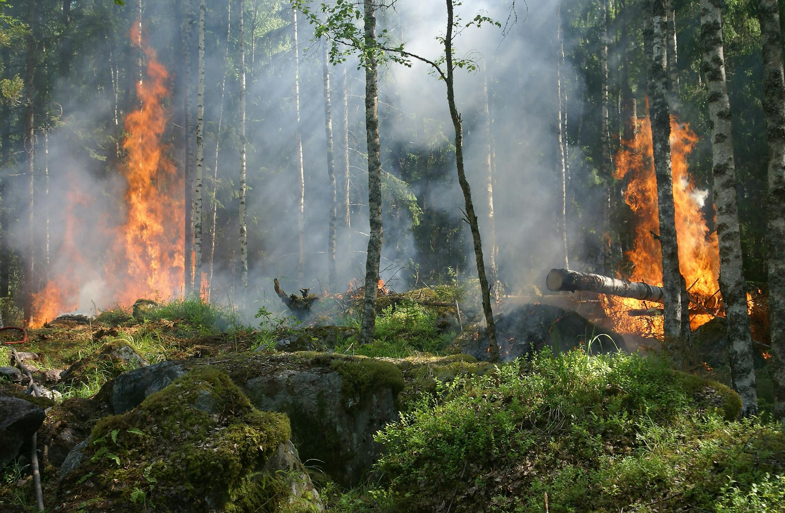

Emergency Guide
What to Actually Do After a Wildfire Hits Your Area
A practical, no-nonsense recovery guide from 37 years of wildfire response across British Columbia.
The evacuation order has been lifted. You want to get home. We understand that. But the 24 to 48 hours after you are allowed back into a wildfire zone are some of the most important hours for your safety, your property, and your insurance claim. What you do — and what you do not do — in that window matters more than most people realize.
We have responded to wildfire events across BC for over 37 years. Kelowna 2003. The Interior fires of 2017 and 2018. Lytton 2021. Every year the pattern repeats. Here is what we wish every homeowner knew before they walked back through that door.
Do Not Rush Back
Authorities clear areas for a reason, and even after the all-clear, the environment around your home is not what it was. The ground can have hot spots that smoulder for days beneath the surface. Weakened trees — burned through at the root system — can fall without warning. Structures that look intact may have compromised framing, melted electrical, or heat-damaged foundations.
And the ash. The grey blanket covering everything is not just wood ash. When a wildfire burns through a neighbourhood, it burns building materials — vinyl siding, pressure-treated lumber, asphalt shingles, plastics, paint, insulation. That ash can contain heavy metals, asbestos fibres, and chemical compounds that are genuinely hazardous. Do not let children or pets walk through it. Do not track it inside.
Before You Enter Your Home
Even if your house is standing and looks undamaged from the outside, treat your first entry like walking into a hazard zone. Because it is one.
- Wear an N95 mask at minimum. A P100 half-face respirator is better. Smoke residue is still in the air inside your home, even if you cannot smell it yet.
- Wear boots with hard soles. Nails, broken glass, and hot embers can be hidden under ash and debris. Sneakers are not enough.
- Do not touch the electrical panel. Heat and water damage to wiring can create shock and fire hazards that are invisible from the outside.
- Have the utility company confirm gas and power are safe before turning anything on. If you smell gas, leave immediately and call 911.
The Air Inside Is Not Safe
This is the one that catches most people off guard. Your home was not directly burned, so it must be fine inside, right? It is not.
Wildfire smoke is made up of ultrafine particles — small enough to penetrate door seals, window frames, and every gap in your building envelope. Those particles are now embedded in your HVAC ductwork, your furnace filter, your carpet fibres, your upholstered furniture, your curtains, your mattresses. If you turn on your furnace or central air, you are circulating contaminated air through every room.
You need professional air scrubbing with HEPA filtration before that system runs again. This is not optional for homes in a wildfire zone. The particulate matter from wildfire smoke is a documented respiratory hazard, and running your HVAC without cleaning it first makes the problem significantly worse.
What to Document First
Before you clean anything, before you move anything, before you throw anything away — document everything.
Walk through every room with your phone. Photograph and video the condition of walls, ceilings, floors, windows. Open every cabinet, every closet. Capture smoke staining, soot deposits, water damage from firefighting efforts, any structural damage. Get close-ups and wide shots. Document the exterior too — roof, siding, foundation, landscaping, outbuildings.
Your insurance company needs this evidence. Once you start cleaning, the visual proof of damage disappears. We have seen claims reduced by tens of thousands of dollars because the homeowner cleaned up before documenting. The adjuster shows up, the house looks okay, and suddenly the scope of the loss is in dispute.
Take the photos first. Always.
What You Can Do Yourself
Once you have documented everything and you are wearing proper protective equipment, there are some things you can safely handle:
- Wipe hard surfaces with a damp cloth. Counters, tables, shelves. Do not dry sweep or dust — that kicks fine particles back into the air where you breathe them.
- Wash clothing in small loads. Smoke-saturated fabrics need to be washed separately from clean clothes. Use cold water first to avoid heat-setting the smoke odour into the fabric.
- Open windows once outdoor AQI is safe. Cross-ventilation helps flush residual smoke, but only when the outside air is actually better than what is inside. Check the BC Air Quality Health Index before opening up.
- Dispose of exposed food. Anything that was open or in soft packaging — throw it out. Canned goods with intact seals are generally fine after washing the exterior.
What You Should Not Do Yourself
This is where good intentions turn into expensive problems:
- Do not clean the HVAC system yourself. Ductwork cleaning after wildfire smoke requires specialized equipment, antimicrobial treatment, and HEPA vacuuming. A shop vac and a rag will not cut it.
- Do not paint over smoke-damaged walls. The odour bleeds through. Every time. You will end up stripping the paint and doing the proper smoke remediation anyway, plus the cost of the paint job you wasted.
- Do not tear out insulation. In older BC homes, insulation may contain asbestos. Disturbing it without testing and containment creates an entirely new hazard on top of the one you already have.
- Do not use ozone generators without professional guidance. Ozone is effective for odour treatment in the right conditions, but it is toxic to humans and pets. Improper use — running it in an occupied space, using it without source removal first — is both dangerous and ineffective.
The Insurance Clock Is Ticking
Report your claim immediately. Not tomorrow. Not after you have had a chance to assess things yourself. Now.
Most homeowner policies in BC have a timeline for reporting losses. Some require notification within 24 to 72 hours of the event. Delay gives the insurer grounds to question the timeline, dispute the scope of damage, or reduce the payout. We have seen it happen repeatedly.
A certified restoration company can document the damage to insurance standards — moisture readings, air quality data, photographic evidence with timestamps, detailed scope of work. This documentation is what separates a claim that gets paid in full from one that gets negotiated down. Your adjuster is not your adversary, but they are working from what they can see and verify. Give them everything.
If wildfire has impacted your home or property, call us.
We handle the cleanup, the documentation, and the insurance coordination. You focus on your family.
1-877-91-FLOOD(913-5663) — 24/7 Emergency Response
Get a Free AssessmentDealing with wildfire damage right now?
1-877-91-FLOOD (913-5663)Okanagan: 250-862-8815 | Vernon: 250-542-6211 | Kootenays: 250-442-7977